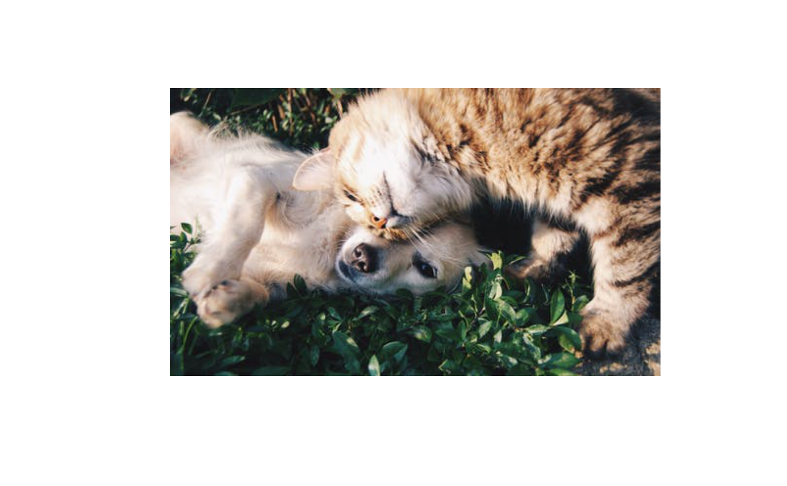
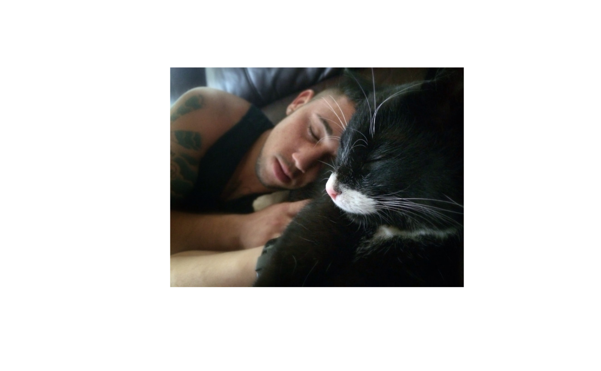
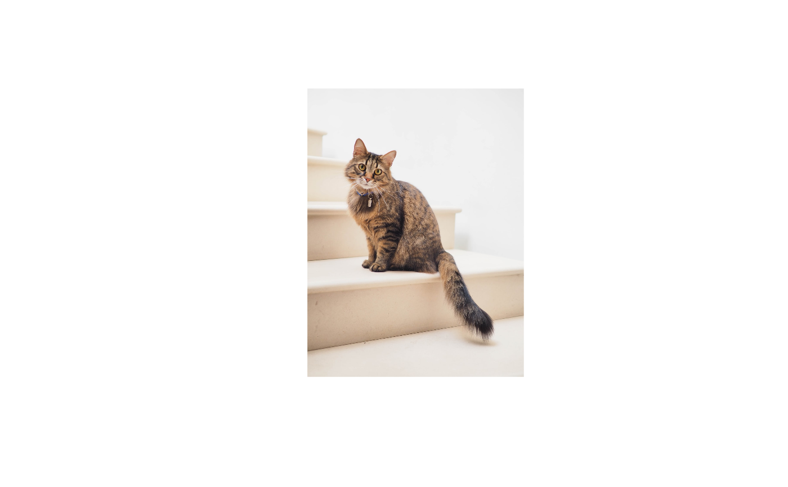

This function displays a picture of a cat and plays a short sound clip containing cat meow. Currently, the images are collected from the following sources-
The sound files come from the following CC BY 3.0 source: http://soundbible.com/suggest.php?q=cat+meow&x=0&y=0
kittyR(url = NULL, meow = TRUE, sound = 3, only_kitten = FALSE, ...)
| url | URL for the source from which individual image URLs are to be
extracted. Default is |
|---|---|
| meow | Logical that decides whether to play a meow sound along with the picture of a cat. |
| sound | A character string or a number specifying what sound to be
played by either specifying one of the built in sounds, specifying the path
to a |
| only_kitten | Logical that decides whether only kitten pics should be
selected (default: |
| ... | Additional arguments (currently ignored). |
A photo of a cat is downloaded and displayed in the plot window.
# in case you want only pics of kittens set.seed(111) kittyR::kittyR(meow = FALSE, only_kitten = TRUE)# provide a custom URL set.seed(300) kittyR::kittyR( url = "https://unsplash.com/s/photos/cat/", meow = FALSE )